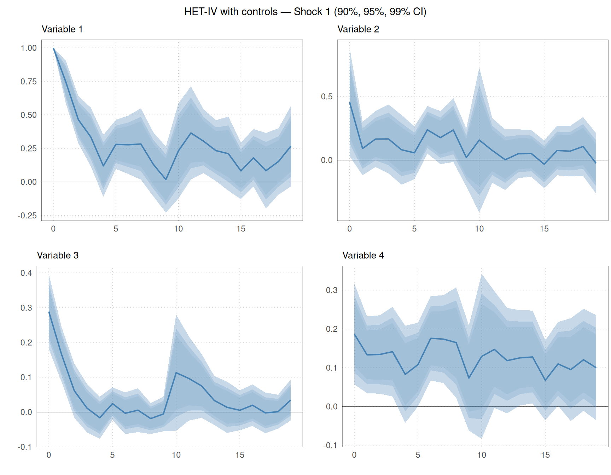
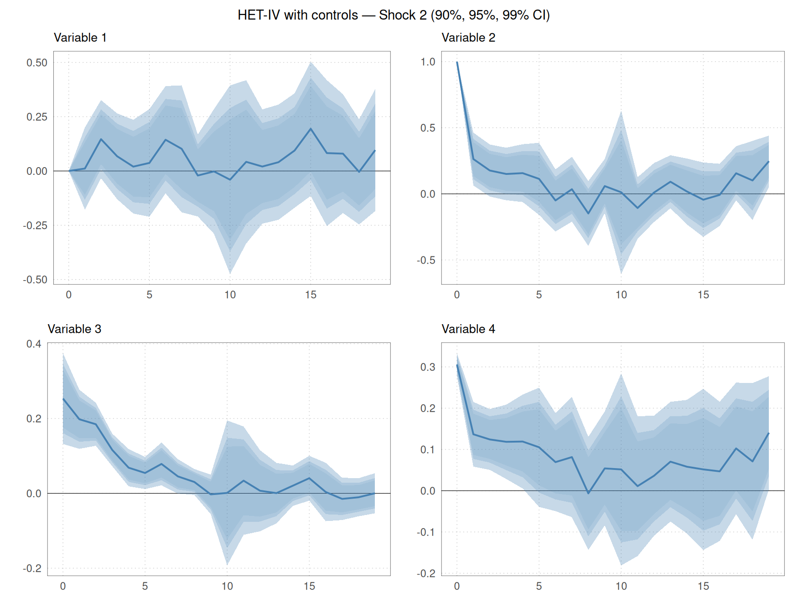
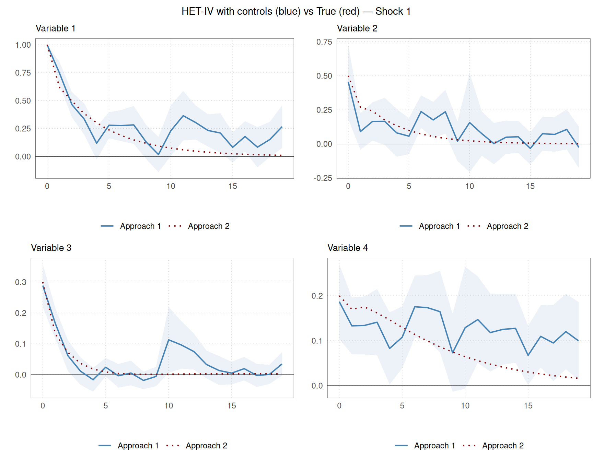
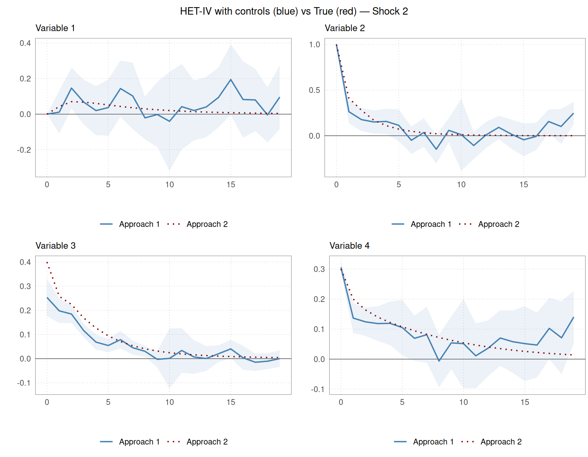
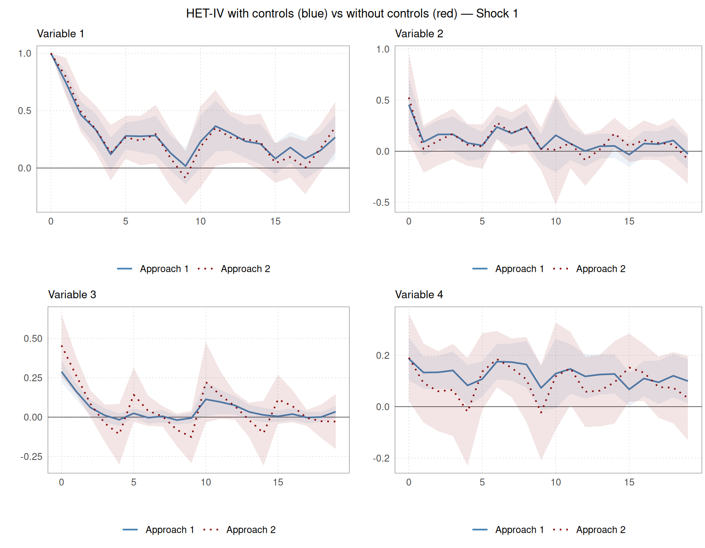
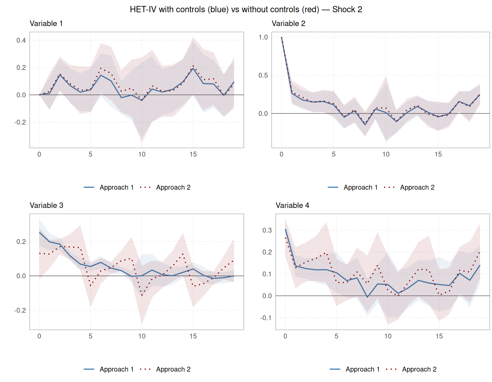
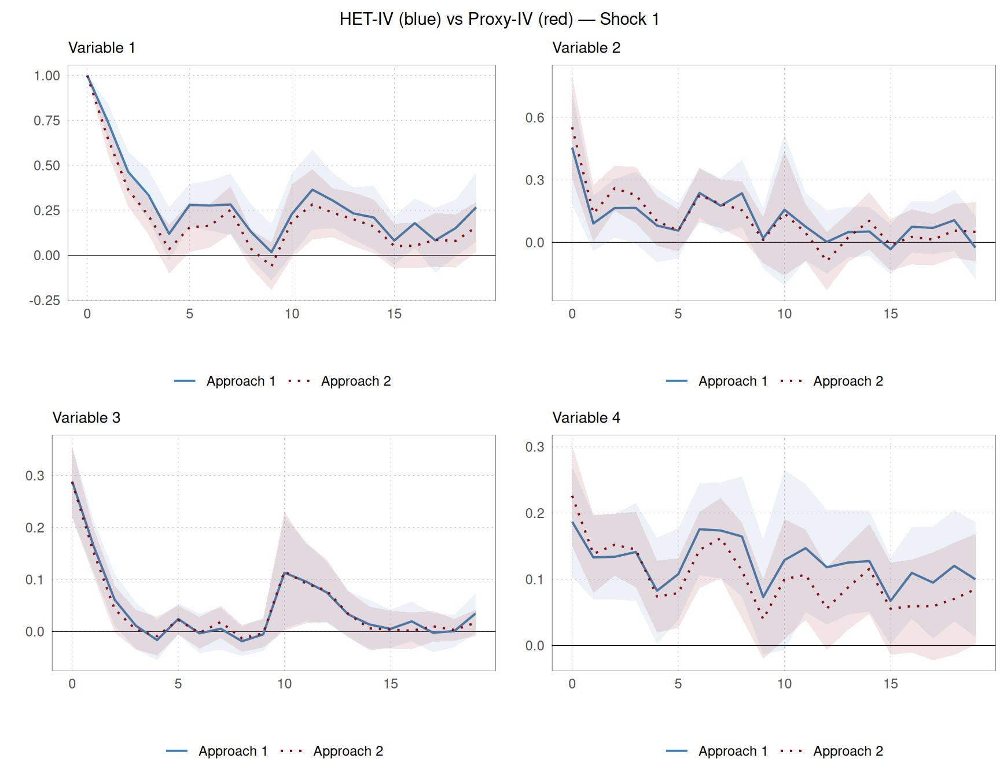
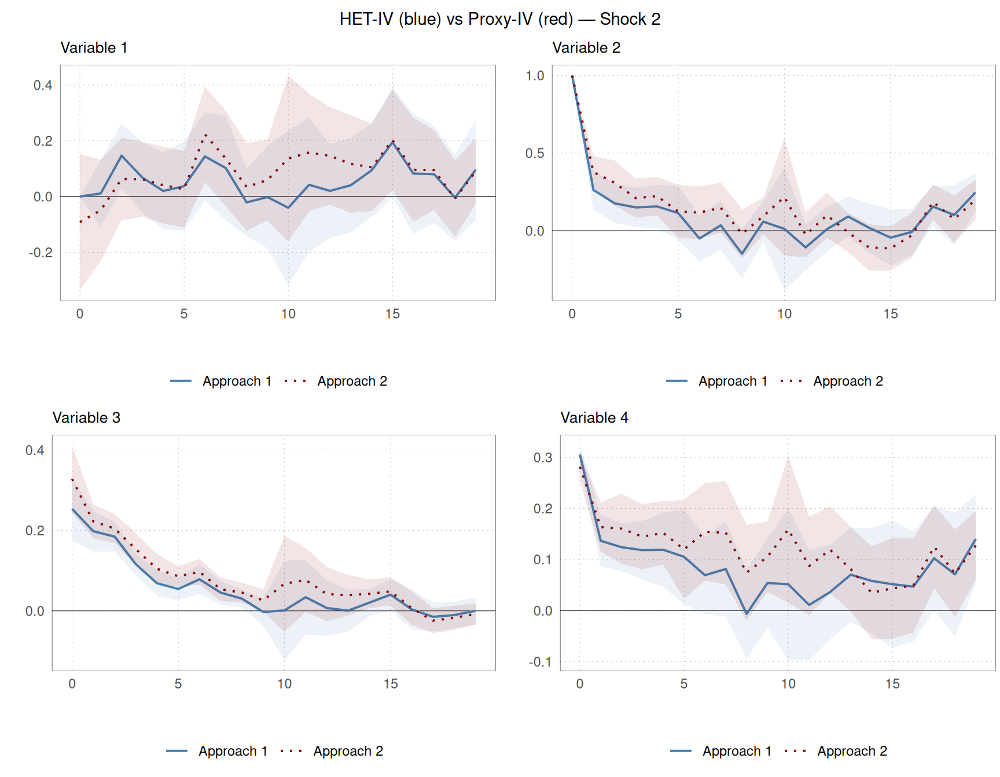

library(hetiv)
# Dimensions
N <- 4 # variables
E <- 2 # event shocks
R <- 2 # regular shocks
P <- 2 # VAR lag order
H <- 20 # IRF horizons
# Impact matrix for event shocks (N x E); lower triangular for recursive ID
PsiE <- matrix(0, N, E)
PsiE[, 1] <- c(1.0, 0.5, 0.3, 0.2)
PsiE[, 2] <- c(0.0, 1.0, 0.4, 0.3)
SigE <- 4 # event shock variance (scalar, applies to all E shocks)
# Impact matrix for regular shocks (N x R)
PsiR <- matrix(0, N, R)
PsiR[, 1] <- c( 1.0, -0.3, 0.2, 0.1)
PsiR[, 2] <- c( 0.2, 1.0, -0.1, 0.4)
# VAR coefficient matrices at lags 1 and 2
Phi <- array(0, dim = c(N, N, P))
Phi[,, 1] <- matrix(c( 0.60, 0.05, -0.04, 0.03,
0.06, 0.40, 0.05, -0.03,
-0.05, 0.04, 0.50, 0.06,
0.03, -0.03, 0.05, 0.70), N, N, byrow = TRUE)
Phi[,, 2] <- matrix(c( 0.10, 0.03, -0.02, 0.02,
0.04, 0.10, 0.03, -0.02,
-0.03, 0.02, 0.10, 0.03,
0.02, -0.02, 0.03, 0.10), N, N, byrow = TRUE)
# Simulate — seed is set internally by simulatedata()
Nobs <- 500
Nbin <- 100
sim <- simulatedata(
Phi = Phi, SigE = SigE, PsiE = PsiE, PsiR = PsiR,
Nobs = Nobs, Nbin = Nbin, N = N, R = R, E = E,
Nevn = 10, P = P, eDist = 0, seed = 42
)
y_data <- sim$y
Ind <- as.integer(sim$IndE[, 1])
# Inject deterministic weekday variation into variables 3 and 4
y_data[, 3] <- y_data[, 3] + 0.5 * seq_len(Nobs) %% 5
y_data[, 4] <- y_data[, 4] + 0.3 * seq_len(Nobs) %% 5Estimating Dynamic Causal Effects with hetiv
Introduction
hetiv provides tools for measuring and identifying multi-dimensional structural shocks in dynamic models models using two complementary IV approaches:
- Heteroskedasticity-IV (Rigobon 2003, Rigobon and Sack 2004, Lewis 2022, Burri and Kaufmann, 2026a): exploits the higher variance of outcome variables on policy event days relative to control days to identify structural shocks without requiring external instruments.
- Proxy-IV (Mertens and Ravn 2013, Stock and Watson 2018): uses an external instrument (proxy) that is correlated with the shock of interest but uncorrelated with other shocks.
Both approaches are implemented as local projection IV estimators following Jordà (2005), which directly produce impulse response functions (IRFs) across multiple horizons. Inference is based on HC robust standard errors (Montiel Olea et al., 2025).
The package allows for multiple shocks and endogenous variables. Weak-instrument robust inference is implemented via the generalised minimum eigenvalue test of Lewis and Mertens (2025), which nests the classical Stock-Yogo (2005) test as a special case. The gweakivtest() function is a direct port of the Matlab files by Lewis and Mertens (2025).
In addition, the package provides the function kfpredict() for predicting the underlying unobserved shocks based on the Kalman-filter, following Burri and Kaufmann (2026b).
This vignette illustrates both approaches using a simulated four-variable VAR with two structural shocks.
Simulated data
We simulate data from a VAR(2) with \(N = 4\) variables, \(E = 2\) event (policy) shocks, \(R = 2\) regular shocks, and \(P = 2\) lags over \(T = 500\) observations. A policy event occurs every 10th period (approximately 10% of observations). Shocks are drawn from a standard normal distribution. The impact matrix is lower-triangular, corresponding to the identifying assumption by Burri and Kaufmann (2026a) that the first shock has a contemporaneous effect on all variables, while the second shock has no contemporaneous effect on the first variable. Deterministic weekday patterns are added to variables 3 and 4 to illustrate the role of controls. The event indicator Ind equals 1 on policy event days and 0 on control days.
To illustrate the proxy-IV approach, we construct a noisy external proxy for the two event shocks by adding Gaussian noise to the true shocks. The proxy is observed only on policy event days and set to NA on control days. This mirrors the typical situation in high-frequency identification of monetary policy shocks, where the high-frequency surprises are only observed on policy announcement days.
# RNG state after simulatedata(seed = 42) is deterministic, so no extra seed needed
e_proxy <- sim$eE
e_proxy[, 1] <- e_proxy[, 1] + rnorm(Nobs, sd = 0.3)
e_proxy[, 2] <- e_proxy[, 2] + rnorm(Nobs, sd = 0.3)
e_proxy[Ind == 0, ] <- NAEstimation
Heteroskedasticity-IV without controls
First, we estimate a misspecified model, which allows us later on to illustrate the role of control variables. The misspsecification stems from not controlling for lagged dependent variables (\(P = 0\)) and not adding deterministic controls.
res_het <- hetiv(
y = y_data,
O = y_data,
Ind = Ind,
P = 0,
H = H,
E = E,
norm = 1,
details = TRUE
)Heteroskedasticity-IV with controls
The second model we estimate is the correctly specified model, with \(P = 2\) lags and the weekday dummies. Note that the weekday dummies absorb the deterministic pattern that we added to the data.
# Weekday dummies: four indicator variables (one left out as reference)
X_data <- matrix(0, nrow = Nobs, ncol = 4)
for (i in 1:4) X_data[, i] <- as.integer((seq_len(Nobs)) %% 5 == (i - 1))
res_het_X <- hetiv(
y = y_data,
O = y_data,
X = X_data,
Ind = Ind,
P = P,
H = H,
E = E,
norm = 1,
details = TRUE
)Proxy-IV
We also can use the external proxy e_proxy to estimate the model via proxy-IV. The same lags are included as in the second model. However, the weekday dummies are dropped due to collinearity, as only the event days are used to identify the responses. That is, the model is correctly specified in terms of controls, but the identification relies on the proxy rather than heteroskedasticity. Note that the proxy-IV function still requires Ind as an input, because, if the instrument is missing, but Ind = 1, we can later on still predict the unobserved shock using the Kalman filter projection in kfpredict().
res_proxy <- proxyiv(
y = y_data,
O = y_data,
Z = e_proxy,
Ind = Ind,
P = P,
H = H,
E = E,
norm = 1,
recursive = FALSE,
details = TRUE
)Proxy-IV with recursive zero restriction
If the proxies are valid, we do not need additional restrictions in principle. However, the function allows to additionally impose zero restrictions. This is useful in a situation where there is some doubt about the validity of the proxies. In addition, imposing the restriction if true, may improve the precision of the estimates.
res_proxy_rec <- proxyiv(
y = y_data,
O = y_data,
Z = e_proxy,
Ind = Ind,
P = P,
H = H,
E = E,
norm = 1,
recursive = TRUE,
details = TRUE
)Impact matrices
The estimated impact matrix Psi gives the contemporaneous responses of all \(N\) variables to each structural shock. We can compare the estimates across the four specifications against the true PsiE. At first sight, the differences are small. As we will see below, there are still some differences in terms of the accuracy of the estimates, the predicted shocks, and the strength of the instruments.
var_labels <- paste0("Variable ", 1:N)
tab_1 <- round(data.frame(True = PsiE[, 1], HET_IV = res_het$Psi[, 1], HET_IV_X = res_het_X$Psi[, 1],
Proxy_IV = res_proxy$Psi[, 1], Proxy_IV_rec = res_proxy_rec$Psi[, 1]), 2)
knitr::kable(
tab_1,
col.names = c("True", "HET-IV without controls", "HET-IV with controls", "Proxy-IV with controls", "Proxy-IV with recursive restriction"),
caption = "Impact matrix estimates (Psi) for shock 1 across different specifications"
)| True | HET-IV without controls | HET-IV with controls | Proxy-IV with controls | Proxy-IV with recursive restriction |
|---|---|---|---|---|
| 1.0 | 1.00 | 1.00 | 1.00 | 1.00 |
| 0.5 | 0.53 | 0.46 | 0.55 | 0.55 |
| 0.3 | 0.46 | 0.29 | 0.29 | 0.29 |
| 0.2 | 0.19 | 0.19 | 0.23 | 0.23 |
tab_2 <- round(data.frame(True = PsiE[, 2], HET_IV = res_het$Psi[, 2], HET_IV_X = res_het_X$Psi[, 2],
Proxy_IV = res_proxy$Psi[, 2], Proxy_IV_rec = res_proxy_rec$Psi[, 2]), 2)
knitr::kable(
tab_2,
col.names = c("True", "HET-IV without controls", "HET-IV with controls", "Proxy-IV with controls", "Proxy-IV with recursive restriction"),
caption = "Impact matrix estimates (Psi) for shock 2 across different specifications"
)| True | HET-IV without controls | HET-IV with controls | Proxy-IV with controls | Proxy-IV with recursive restriction |
|---|---|---|---|---|
| 0.0 | 0.00 | 0.00 | -0.09 | 0.00 |
| 1.0 | 1.00 | 1.00 | 1.00 | 1.00 |
| 0.4 | 0.13 | 0.25 | 0.33 | 0.34 |
| 0.3 | 0.27 | 0.31 | 0.28 | 0.29 |
Impulse response functions
Single estimator with confidence bands
We can assess the accuracy of the estimates, and the dynamic causal effects, using plotirf(). The function plots IRFs with shaded confidence bands for one estimation approach. The confidence levels can be chosen freely. Here, we show the 90%, 95%, and 99% confidence intervals for the HET-IV estimates with controls.
plots_het_X <- plotirf(
IRFest = res_het_X$irf,
IRFse = res_het_X$se,
HTick = 5,
Labels = var_labels,
ci = c(0.90, 0.95, 0.99)
)
for (j in seq_len(E)) {
idx <- ((j - 1) * N + 1):(j * N)
panel <- cowplot::plot_grid(plotlist = plots_het_X[idx], ncol = 2)
title <- cowplot::ggdraw() +
cowplot::draw_label(paste0("HET-IV with controls — Shock ", j, " (90%, 95%, 99% CI)"), size = 11)
print(cowplot::plot_grid(title, panel, ncol = 1, rel_heights = c(0.05, 1)))
}

HET-IV estimates versus true IRF
Because we use simulated data, we can compare the estimates to the true ones. plot2irf() overlays two sets of IRFs. We compare the HET-IV estimate (blue) against the theoretical IRF computed from the known VAR parameters (red). The function computeirf() computes the theoretical IRF. The standard errors for the true IRF are set to zero, so that no confidence bands are plotted for the true IRF.
irf_true <- computeirf(PsiE, Phi, H, cum = FALSE)$irf
irf_true_se <- array(0, dim = dim(irf_true), dimnames = dimnames(irf_true))
plots_vs_true <- plot2irf(
IRF1 = res_het_X$irf,
IRF1se = res_het_X$se,
IRF2 = irf_true,
IRF2se = irf_true_se,
HTick = 5,
Labels = var_labels,
ci = 0.90
)
for (j in seq_len(E)) {
idx <- ((j - 1) * N + 1):(j * N)
panel <- cowplot::plot_grid(plotlist = plots_vs_true[idx], ncol = 2)
title <- cowplot::ggdraw() +
cowplot::draw_label(
paste0("HET-IV with controls (blue) vs True (red) — Shock ", j), size = 11)
print(cowplot::plot_grid(title, panel, ncol = 1, rel_heights = c(0.05, 1)))
}

HET-IV estimates versus misspecified model
We can also compare the accuracy of the estimates using the correct and misspecified models. We see that the confidence intervals are wider using the misspecified model. This is especially true for the third and fourth variables that are affected by the deterministic weekday pattern. The misspecified model does not account for this pattern, which leads to more uncertainty and biased estimates.
plots_vs_true <- plot2irf(
IRF1 = res_het_X$irf,
IRF1se = res_het_X$se,
IRF2 = res_het$irf,
IRF2se = res_het$se,
HTick = 5,
Labels = var_labels,
ci = 0.90
)
for (j in seq_len(E)) {
idx <- ((j - 1) * N + 1):(j * N)
panel <- cowplot::plot_grid(plotlist = plots_vs_true[idx], ncol = 2)
title <- cowplot::ggdraw() +
cowplot::draw_label(
paste0("HET-IV with controls (blue) vs without controls (red) — Shock ", j), size = 11)
print(cowplot::plot_grid(title, panel, ncol = 1, rel_heights = c(0.05, 1)))
}

HET-IV versus Proxy-IV
We can also compare the HET-IV estimates to the Proxy-IV estimates. The confidence intervals are slightly wider for the HET-IV approach, which is expected given that the proxy is highly correlated with the true shocks. This may not be the case if the proxy is more noisy and therefore weakly correlated with the endogenous variable. However, the point estimates are quite similar across the two approaches.
plots_vs_proxy <- plot2irf(
IRF1 = res_het_X$irf,
IRF1se = res_het_X$se,
IRF2 = res_proxy$irf,
IRF2se = res_proxy$se,
HTick = 5,
Labels = var_labels,
ci = 0.90
)
for (j in seq_len(E)) {
idx <- ((j - 1) * N + 1):(j * N)
panel <- cowplot::plot_grid(plotlist = plots_vs_proxy[idx], ncol = 2)
title <- cowplot::ggdraw() +
cowplot::draw_label(
paste0("HET-IV (blue) vs Proxy-IV (red) — Shock ", j), size = 11)
print(cowplot::plot_grid(title, panel, ncol = 1, rel_heights = c(0.05, 1)))
}

Shock extraction
kfpredict() recovers structural shocks from reduced-form residuals via a Kalman filter prediction. It requires the estimated impact matrix Psi, the residual covariance matrices on event and control days (Sig, SigR), and the residuals et.
shocks_het <- kfpredict(Sig = res_het$Sig, SigR = res_het$SigR,
Psi = res_het$Psi, et = res_het$et,
tol = 1e-4, scale = TRUE)
shocks_het_X <- kfpredict(Sig = res_het_X$Sig, SigR = res_het_X$SigR,
Psi = res_het_X$Psi, et = res_het_X$et,
tol = 1e-4, scale = TRUE)
shocks_proxy <- kfpredict(Sig = res_proxy$Sig, SigR = res_proxy$SigR,
Psi = res_proxy$Psi, et = res_proxy$et,
tol = 1e-4, scale = TRUE)
shocks_proxy_rec <- kfpredict(Sig = res_proxy_rec$Sig, SigR = res_proxy_rec$SigR,
Psi = res_proxy_rec$Psi, et = res_proxy_rec$et,
tol = 1e-4, scale = TRUE)We assess the accuracy of the prediction comparing them to the true event shocksfrom the DGP.
true_shocks <- sim$eE
cor_df1<- data.frame(
True = true_shocks[, 1],
Proxy = e_proxy[, 1],
HET_IV = shocks_het[, 1],
HET_IV_X = shocks_het_X[, 1],
Proxy_IV_X = shocks_proxy[, 1],
Proxy_IV_Rec = shocks_proxy_rec[, 1]
)
cor_df2<- data.frame(
True = true_shocks[, 2],
Proxy = e_proxy[, 2],
HET_IV = shocks_het[, 2],
HET_IV_X = shocks_het_X[, 2],
Proxy_IV_X = shocks_proxy[, 2],
Proxy_IV_Rec = shocks_proxy_rec[, 2]
)
knitr::kable(
data.frame(round(cor(cor_df1, use = "complete.obs"), 2))[1, ],
col.names = c("True", "Proxy", "HET-IV without controls", "HET-IV with controls", "Proxy-IV with controls", "Proxy-IV with recursive restriction"),
caption = paste0("Correlation of predicted shocks with true shocks for shock ", j)
)| True | Proxy | HET-IV without controls | HET-IV with controls | Proxy-IV with controls | Proxy-IV with recursive restriction | |
|---|---|---|---|---|---|---|
| True | 1 | 0.99 | 0.86 | 1 | 0.94 | 0.94 |
knitr::kable(
data.frame(round(cor(cor_df2, use = "complete.obs"), 2))[1, ],
col.names = c("True", "Proxy","HET-IV without controls", "HET-IV with controls", "Proxy-IV with controls", "Proxy-IV with recursive restriction"),
caption = paste0("Correlation of predicted shocks with true shocks for shock ", j)
)| True | Proxy | HET-IV without controls | HET-IV with controls | Proxy-IV with controls | Proxy-IV with recursive restriction | |
|---|---|---|---|---|---|---|
| True | 1 | 0.98 | 0.56 | 0.94 | 0.96 | 0.96 |
The correlation between the true shocks and the proxy is lower than one due to an attenuation bias (see Burri and Kaufmann, 2026a). The correlation of the prediction is even lower if we use a misspecified model. However, if we use the correct model, the correlation is larger than 0.99 (0.94 for Shock 2). Proxy-IV with controls also well. Note that it works also almost equally well imposing the recursive restriction. This is what we would expect given that the restriction is true in the DGP.
Weak instrument test
gweakivtest() implements the generalised minimum eigenvalue test of Lewis and Mertens (2025), which is robust to heteroskedasticity and serial correlation and applicable to multiple endogenous regressors and multiple instruments. Note that classical Stock-Yogo (2005) test is applicable only for the homoskedastic case.
Both hetiv() and proxyiv() return a WeakData element when details = TRUE. This data frame contains the outcome and instrument columns in the form expected by gweakivtest(), along with any lagged and deterministic controls used in estimation. The code below extracts the relevant columns from the WeakData data frame and runs the weak instrument test for each of the four specifications. The results are then compiled into a table for easy comparison. Note that we use EHW instead of Newey-West standard errors, because, conditional on the covariates, we know that the shocks are serially uncorrelated. If in doubt, use NW option.
# Helper: extract y, Y, X, Z from WeakData and run gweakivtest
run_weaktest <- function(weakdata, E) {
# y: outcome variable E+1 (not used as endogenous regressor)
y <- weakdata[, paste0("y", E + 1)]
# Y: first E outcome variables (endogenous regressors)
Y <- weakdata[, paste0("y", 1:E)]
# Z: the E instruments
Z <- weakdata[, paste0("Z", 1:E),]
# X: lagged ("o*") and deterministic ("x*") control columns. In any case, add a constant term as well.
# Note that gweakivtest() adds a constant term if missing
ctrl <- startsWith(colnames(weakdata), "o") | startsWith(colnames(weakdata), "x") | startsWith(colnames(weakdata), "i")
X <- if (any(ctrl)) cbind(weakdata[, ctrl], matrix(1, nrow(weakdata), 1)) else matrix(numeric(0), nrow(weakdata), 0)
gweakivtest(y, Y, X, Z, cov_type = "EHW")
}
specs <- list(
"HET-IV, no controls" = res_het$WeakData,
"HET-IV, with controls" = res_het_X$WeakData,
"Proxy-IV, with controls" = res_proxy$WeakData,
"Proxy-IV, with controls + recursive restriction" = res_proxy_rec$WeakData
)
wt_results <- lapply(specs, run_weaktest, E = E)tab <- do.call(rbind, lapply(names(wt_results), function(nm) {
r <- wt_results[[nm]]
data.frame(
Specification = nm,
Statistic = round(r$gmin_generalized, 2),
LM_CV = round(r$gmin_generalized_critical_value, 2),
SY_CV = round(r$stock_yogo_critical_value_nagar, 2),
Strong = ifelse(r$gmin_generalized > r$gmin_generalized_critical_value,
"Yes", "No"),
stringsAsFactors = FALSE
)
}))
knitr::kable(
tab,
col.names = c("Specification", "Statistic", "LM critical value",
"SY critical value", "Strong instruments?"),
caption = "Weak instrument test results (Lewis-Mertens generalised minimum eigenvalue test)"
)| Specification | Statistic | LM critical value | SY critical value | Strong instruments? |
|---|---|---|---|---|
| HET-IV, no controls | 15.94 | 37.11 | NaN | No |
| HET-IV, with controls | 89.08 | 47.62 | NaN | Yes |
| Proxy-IV, with controls | 30.57 | 21.77 | NaN | Yes |
| Proxy-IV, with controls + recursive restriction | 30.57 | 21.77 | NaN | Yes |
The specification without controls is affected by a weak-instrument problem. The other specification pass the weak instrument tests. Note that the critical values are typically much higher than the common rule of thumb for the Stock and Yogo (2005) test, but also, higher than in the HAR test for the univariate case by Montiel Olea and Pflueger (2013), which is around 23.
References
Burri, M. and Kaufmann, D. (2026a). Measuring monetary policy shocks. IRENE Working Papers 24-03, IRENE Institute of Economic Research, University of Neuchâtel.
Burri, M. and Kaufmann, D. (2026b). Multiple monetary policy shocks from daily data: A heteroskedasticity IV approach. IRENE Working Papers 26-06, IRENE Institute of Economic Research, University of Neuchâtel.
Jordà, Ò. (2005). Estimation and inference of impulse responses by local projections. American Economic Review, 95(1), 161–182.
Lewis, D. J. (2022). Robust inference in models identified via heteroskedasticity. Review of Economics and Statistics, 104(3), 510–524.
Lewis, D. J. and Mertens, K. (2025). A robust test for weak instruments for 2SLS with multiple endogenous regressors. The Review of Economic Studies, DOI: 10.1093/restud/rdaf103.
Mertens, K. and Ravn, M. O. (2013). The dynamic effects of personal and corporate income tax changes in the United States. American Economic Review, 103(4), 1212–1247.
Montiel Olea, J. L. and Pflueger, C. E. (2013). A robust test for weak instruments. Journal of Business & Economic Statistics, 31(3), 358-369.
Montiel Olea, J. L., M. Plagborg-Møller, E. Qian, C. K. Wolf (2025). Local projections or VARs? A primer for macroeconomists. NBER Macroeconomics Annual 2025, vol. 40, pp. 1-64, National Bureau of Economic Research.
Rigobon, R. (2003). Identification through heteroskedasticity. Review of Economics and Statistics, 85(4), 777–792.
Stock, J. H. and Watson, M. W. (2018). Identification and estimation of dynamic causal effects in macroeconomics using external instruments. Economic Journal, 128(610), 917–948.
Stock, J. H. and Yogo, M. (2005). Testing for weak instruments in linear IV regression. In D. W. K. Andrews and J. H. Stock (Eds.), Identification and Inference for Econometric Models, pp. 80–108. Cambridge University Press.